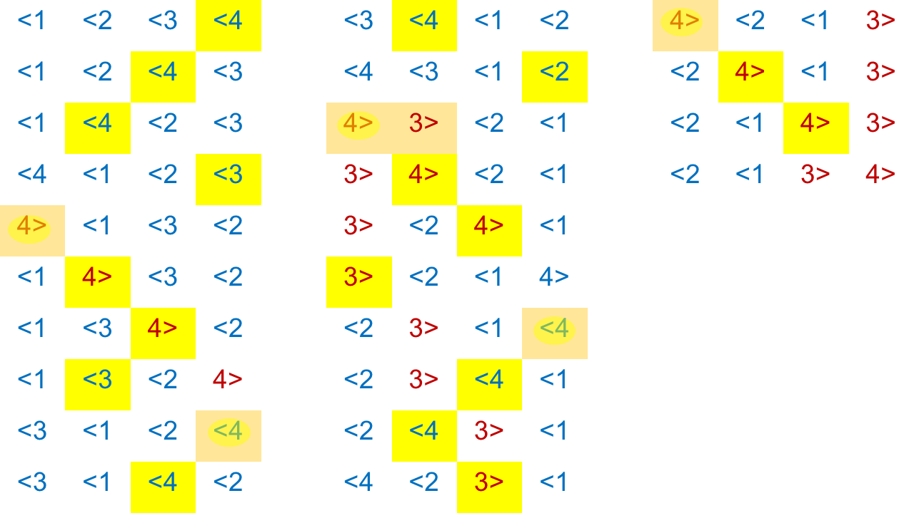

class: center, middle # **ALGORSMICA** ## Presentaci de lassignatura Jordi Vitri, Mireia Ribera *Universitat de Barcelona* --- ## Contactes + Professors de Teoria: + Jordi Vitri, <jordi.vitria@ub.edu> + Mireia Ribera, <ribera@ub.edu> + Professors de Prctiques: + Auxiliar docent: --- ## Qu s aquesta assignatura? Aquesta assignatura est dirigida a donar la formaci bsica als estudiants sobre lanlisi i disseny dalgorismes, tant des dun punt de vista teric com aplicat. No sassumeix cap formaci prvia en programaci de lestudiant. ##Qu sespera dels estudiants matriculats? Els estudiants han de participar de forma activa durant les classes magistrals de teoria (**1,5 hores a la setmana**). Durant les hores terico-prctiques (o de problemes, **2 hores cada dues setmanes**) hauran de dissenyar solucions algorsmiques als problemes plantejats pels professors. Durant les hores presencials de prctiques (2 hores cada dues setmanes) hauran de programar de forma individual una srie dexercicis prctics. Les hores no presencials de lassignatura (4 hores a la setmana) les han de dedicar a lestudi i a la preparaci dels problemes i prctiques. --- ## Programarem? Tot i que en aquesta assignatura no s estrictament necessari programar, ho farem amb un llenguatge dalt nivell: Python. ## Com sorganitza lassignatura? Usarem dues eines per distribuir la informaci i organitzar la feina: el **Campus Virtual** de la UB i [**GitHub**](https://github.com/orgs/AlgorismicaUB2018-2019/). --- ### El campus virtual + Apunts de teoria + Enunciat de les prctiques + Lliurament de les prctiques + Avaluacions de les proves i prctiques ### GitHub + Enunciats dels problemes + Portfoli individual dels problemes resolts El punt de partida d'un estudiant s crear un compte personal a GitHub amb el format nomCognom (per exemple, mireiaRibera) La creaci d'aquest compte s gratuta i es pot fer a https://github.com. Un compte personal gratut permet crear un nombre illimitat de repositoris pblics. Els repositoris pblics sn visibles per al pblic en general. Normalment s'utilitzen per desenvolupar programari lliure amb qualsevol tipus de llicncia. Un repositori s, doncs, un lloc on es poden emmagatzemar fitxers dun projecte utilitzant el control de versions Git. --- ## Com savaluar lassignatura? (I) Lassignatura seguir un esquema davaluaci continuada, amb dos elements principals: proves presencials i lliurament remot dexercicis. + Lliurament via web de prctiques (LP): Els professors, amb periodicitat quinzenal, proposaran una srie de prctiques que hauran de ser lliurades via web per part de lalumne dins el perode assenyalat pel professor. Cada un dels lliuraments ser avaluat pel professor amb una nota que pot anar de 0 (nota mnima) a 10 (nota mxima). En cas de no lliurar les prctiques dins el perode assenyalat, lalumne obtindr un 0. La nota final (LP) de la part de lliurament de prctiques ser la mitja de tots els lliuraments. + Proves presencials (PP): durant el curs, lalumne realitzar varies proves escrites (terico-prctiques) davant del professor. Les proves savaluaran amb una nota de 0 (nota mnima) a 10 (nota mxima). La nota final (PP) daquesta part ser la mitja de totes les proves realitzades (una prova no realitzada = 0). La nota segons lavaluaci continuada (NF) es calcular de la segent manera: + Si (LP>4,0 i PP>4,0): NF = PP * 0,6 + LP * 0,4 + Sin, NF = min(4.0, PP * 0,6 + LP * 0,4). --- ## Com savaluar lassignatura? (II) Durant la segona prova presencial (Gener) es donar lopci de presentar-se de tota lassignatura o noms de la segona part. Tots aquells alumnes que obtinguin una NF>=3,5 tenen dret a una reavaluaci al cap dun dies de la publicaci de NF. La reavaluaci ser equivalent a un examen final. En aquests casos, la nota final de lassignatura ser la nota de la reavaluaci. --- ##I el lliurament de problemes...? No hi ha una activitat prpia de lliurament de problemes, per lalumne anir construint un portafolis de problemes que el professor pot revisar en qualsevol moment. La part prctica de les proves presencials estar basada en aquests problemes. GitHub proporciona informaci sobre QUAN sha resolt els problemes. Per valorar aquesta activitat el professor tindr en compte tant el QU com el QUAN. --- ## Calendari de proves El 6 de novembre de 15h a 18h es far la primera prova presencial. s un perode no lectiu. La segona prova i la reavalauci es faran durant el mes de gener. --- ## Bibliografia ### Algorsmica + T. H. Cormen [et al.] Introduction to algorithms, MIT Press, 2001. + S.Dasgupta. Algorithms, McGrawHill, 2006. www.cs.berkeley.edu/~vazirani/algorithms/all.pdf + V. Levitin, Introduction to the Design and Analysis of Algorithms, ISBN: 0-201-74395-7, Addison-Wesley (2ond edition) + S. Skiena. The Algorithm Design Manual, Springer; 2nd edition (August 21, 2008), Language: English, ISBN-10: 1848000693. ### Python + A. Downey, J. Elkner and C. Meyers. How to Think Like a Computer Scientist. Learning with Python. http://greenteapress.com/thinkpython/thinkCSpy/ --- class: center, middle # Tema 1: **Qu s un algorisme?** Jordi Vitri, Mireia Ribera *Universitat de Barcelona* --- ## Qu s un algorisme? *Wikipedia*: Un algorisme s una seqncia finita, no ambigua i explcita, dinstruccions per a resoldre un problema. *La definici daquesta assignatura*: Un algorisme s qualsevol procediment computacional que pren un (o una srie) de valors com a entrada (*input*) i genera algun valor (o conjunt de valors) com a sortida (*output*). + Els algorismes sn les idees que hi ha darrera els programes. + Els algorismes no depenen del llenguatge en que estan escrits (per s que depenen de la representaci de les dades). + Els algorismes interessants sn els que resolen problemes generals. Els problemes especfics es resolen redunt-los a problemes generals! --- ### Exemple computacional (arrel quadrada) Input: Un nombre `a` Output: Un nombre `b` tal que `b*b=a` Observaci: Volem una soluci **correcta i eficient**! -- Her dAlexandria (10 dC-70 dC) va proposar el segent algorisme: + Comencem amb un nombre qualsevol `g`. + Si `g*g` sassembla prou a `a`, ens aturem i donem la resposta. + Sin, calculem un nou candidat `(g+a/g)/2`. + Anem repetint aquest procs fins que ens aturem. -- Codificaci en Python: ```python def hero(a,error): import math g = 1.0 while math.fabs(g*g - a) > error: g = 1/2*(g+a/g) return g ``` Si executem `hero(49,0.0001)` dona `7.000000141269659`. --- ## Correcci i Eficincia Algorsmica Un algorisme es **correcte** si podem demostrar que retorna la sortida desitjada per a qualsevol entrada legal (per al problema de larrel quadrada, aix vol dir nombres positius o 0!). s **eficient** si es fa amb el mnim nombre de recursos (cicles de clcul = temps, memria = espai) possible. Demostrar la *correcci* s fcil per alguns algorismes, difcil per la majoria i fins i tot impossible per alguns. Fer servir algorismes eficients s una necessitat! -- ## Algorismes i ordinadors Un ordinador fa noms dues coses (per molt ben fetes!): calcular (combinar dades per obtenir altres dades) i emmagatzemar (llegir/escriure a una memria) els resultats del clcul. Un ordinador convencional fa ms de 1.000.000.000 de clculs per segon i pot emmagatzemar ms de 1.000.000.000.000 de bits. --- ## Exemple: el problema del viatjant de comer (TSP). Aquest cartell correspon al concurs promogut per Procter and Gamble lany 1962 per recorrer 33 ciutats dels EEUU: <center><img src="images/tsp.png" width="350"></center> Anem a proposar algorismes per solucionar-ho! --- ### Estratgies possibles Suposem que hem de passar per un conjunt de punts definits i volem minimitzar la distncia recorreguda. A la dreta veiem els punts i a l'esquerra la millor soluci, la que voldriem trobar amb un algorisme que accepts com entrada qualsevol conjunt de punts. <center><img src="images/recorregut.jpg" width="650"></center> --- ### Propostes **Soluci I**: Escollim un punt aleatori, i anem seleccionant el ve ms proper per continuar. <center><img src="images/recorregut2.jpg" width="650"></center> s correcte? --- ### Propostes **Soluci II**: Considerem **tots el possibles passos parcials entre dues ciutats** i anem afegint repetidament el ms petit sempre i quan no generi un cicle o una doble sortida per un punt. s correcte? -- **Soluci III**: Considerem **totes les possibles ordenacions** dels punts i seleccionem la ms curta. s correcte? -- ### Solucions correctes i eficients! La soluci anterior s correcta per no s eficient. El nombre de possibles ordenacions d'un conjunt de `n` elements ve donat pel concepte de factorial: `n!` El factorial d'un nombre `n` creix molt rpidament quan `n` es fa gran! --- ## Com expressem els algorismes? Amb **llenguatges de programaci**. Un llenguatge de programaci es defineix per unes **primitives** (smbols), una **sintaxi** (regles de combinaci de smbols), una **semntica esttica** (combinacions de smbols amb significat) i una **semntica** (el significat que nosaltres volem donar a lalgorisme). -- Fins ara hem usat el pseudocodi, per tamb podem usar un llenguatge dalt nivell, Python, molt proper al pseudocodi, que ens permetr executar els algorismes! El preu que hem de pagar s que haurem despecificar una mica ms les coses. Els avantatges: + aprenem un llenguatge til + som ms formals en les especificacions + podem fer simulacions --- ## Llenguatges + Sintaxi: `3.2 + 4.5` vs `3.2 a 2.3` + Semntica esttica: `3.2/abc` s sintcticament correcte perqu lexpressi (`<literal><operador><literal>`) ho s, per no ho s des del punt de vista de la semntica esttica. Els errors ms perillosos quan programem no sn els sintctics, ats que la majoria es poden detectar automticament o sn fcils de veure! Alguns llenguatges detecten casi tots els errors de semntica esttica, per Python noms alguns! Si no hi ha errors semntics el programa far alguna cosa (no necessriament la que volem!) ```python def suma(a,b): ''' Aquest programa no fa el que ha de fer! ''' return a - b ``` --- ## Llenguatges Si un programa t un error: 1. Pot acabar inesperadament la seva execuci i generar un error. La majoria de vegades no afecta a la resta de programes de lordinador, per hi ha errors que poden causar un error fatal a l'ordinador i aturar-lo [1]. 2. Pot ser que mai saturi i per tant no generi la resposta. 3. Pot aturar-se i generar una resposta que pot ser incorrecta. .footnote[[1]: Pot ser que els errors noms es manifestin per alguna combinaci especfica dels valors d'entrada i normalment no podem provar totes les possibilitats!] --- class: center, middle # Tema 2: **Python (1)** --- # Python Si volem executar una seqncia dinstruccions podem **crear/definir** una **funci** (que en aquest cas sanomena `hola`): ```python def hola(): print("Hola!") ``` Un cop la tenim definida la poden **cridar/invocar**: ```python hola() > Hola! ``` Les funcions poden tenir **parmetres** (que van entre els parntesi): ```python def hola(persona): print("Hola", persona) ``` Que quan es criden han de prendre un valor: ```python hola("Jordi") > Hola Jordi ``` --- ## Un programa en Python En aquest programa podem veure diversos elements del llenguatge: + comentaris, + variables, + assignacions, + iteracions, + entrada de dades des del teclat, + crida de la funci, + etc. ```python def main(): ''' Comportament catic ''' print("Aquest programa implementa un comportament catic") x = input("Entra un nombre entre 0 i 1") x = float(x) for i in range(10): x = 3.9 * x * (1-x) print(x) main() ``` --- ## Un programa en Python Els elements ms importants que tenim per a construir un programa Python sn: + **Noms**. Els fem servir per anomenar les funcions i les variables. + Tcnicament sanomenen identificadors. Han de comenar per lletra o `_` que pot ser seguit per qualsevol seqncia de lletres, dgits o subratllats (no espais!). + Sn sensibles a majscules i minscules. + Hi ha noms reservats (`and`, `for`, `def`, etc.). + **Expressions**: Sn la part de codi que calcula o produeix nous valors de les dades. + Lexpressi ms simple sanomena literal, i susa per especificar un valor. Hem vist literals numrics. Un identificador simple tamb pot ser una expressi (el nom duna variable). + Podem crear expressions combinant expressions ms simples amb operadors: `3.9 + x * (1-x)` + Els operadors matemtics segueixen les precedncies estndard. --- ## Un programa en Python + **Sortides**. Hi ha la funci `print`, amb els segents arguments: `print(value1, value2,..., sep=' ', end='\n')` + **Assignacions**. + Assignacions simples: `x = 3 + x * (1-x)` + Assignacions dentrada: `x = input("Entra un valor: ")`. A ms a ms de nombres, podem entrar qualsevol expressi i avaluar-la: ```python a = eval(input("Entrada: ")) a > Entrada: 3+4+5 > 12 ``` --- ## Un programa en Python + Assignacions simultnies, com per exemple: `sum, diff = x+y, x-y` Aquest tipus dassignaci pot ser molt til, com per exemple per intercanviar els valors de dues variables. Aix no funciona!: ```python x = 3 y = 4 x = y y = x print(x,y) > 4 4 ``` --- ## Un programa en Python Iteracions (*loops*) definides. Es fa un nombre definit de vegades, i sn el tipus ms simple diteraci. ```python for i in range(10): print(i, end=" ") > 0 1 2 3 4 5 6 7 8 9 for j in [0,1,2,3]: print(i*i, end=" ") > 0 1 4 9 ``` --- ## Els nombres i Python Les dades que un programa pot manipular i emmagatzemar sn de diferents tipus. El tipus de la dada determina quins valors pot tenir i quines operacions es poden fer. ```python type(3), type(3.14) > (int, float) x = -32 type(x) > int print(3+4, 3+4.0) > 7 7.0 print(10.0/3, 10/3) > 3.3333333333335 3.3333333333335 ``` Els operadors bsics sn: `+`, `-`, `*`, `/`, `**`, `%`, `abs()`. --- ## Els nombres i Python Python tamb ens dona funcions matemtiques dins duna biblioteca (*library*) especial anomenada `math`. Una biblioteca no s res ms que un mdul que cont definicions tils de funcions. ```python import math def main(a,b,c): x = (-b+math.sqrt(b**2-4*a*c))/2*a print(x) ``` Quan treballem amb nombres, la funci `range` pot ser molt til. La seva sintxi s `range(start, stop, step)`. ```python list(range(10)) > [0,1,2,3,4,5,6,7,8,9] list(range(0,10,3)) > [0,3,6,9] list(range(0,-4,-1)) > [0,-1,-2,-3] ``` --- ### Exemple: el factorial d'un nombre. ```python def factorial(num): factorial = 1 if num < 0: print("Entra un enter positiu! ") elif num == 0: print("El factorial de 0 s 1") else: for i in range(1,num+1): factorial *= i print("El factorial de ", num, "s", factorial) ``` --- ## Python Help + [Lloc Web de Python](https://www.python.org/) + [Documentaci](https://docs.python.org/3/) --- class: center, middle # Tema 3: **Python (2)** --- ## Cadenes de carcters (*strings*) Un string s una seqncia de carcters, que es pot emmagatzemar en variables: ```python a = 'Hola' b = "spam" print(a,b) > Hola spam type(str2) > str ``` Podem entrar *strings* des del teclat: ```python nom = input("Quin s el teu nom?") ``` De fet, tot el que entra pel teclat s una cadena de carcters. Si volem entrar un altre tipus ho hem de fer aix: ```python edat = eval(input("Quina s la teva edat?")) ``` `eval` interpreta el que entrem com una expressi Python i l'avalua. --- ## Cadenes de carcters (*strings*) Per accedir a una cadena de carcters hem de veure com Python els idexa: H | o | l | a | | o | l | a - | - | - | - 0 | 1 | 2 | 3 | 4 | 5 | 6 | 7 Llavors podem accedir als valors de cada element de la seqncia o fins i tot a subseqncies: ```python s = "Hello Bob" x = 8 print(s[0], s[1], s[x-2]) > H l B ``` Una operaci anomenada *slicing* ens permet accedir a subcadenes de carcters: ```python print(s[0:3], s[5:9], s[:3], s[3:], s[:]) > 'Hel', ' Bob', 'Hel', 'lo Bob', 'Hello Bob' ``` --- ## Cadenes de carcters (*strings*) Tamb podem concatenar (`+`) i repetir (`*`) subcadenes: ```python print("Bread" + " & " * 3 + "Breakfast") > "Bread & & & Breakfast" len("Bread" + " & " * 3 + "Breakfast") > 23 ``` Exemple: ```python def mes(): mesos = "GenFebMarAbrMaiJunJulAgoSetOctNovDes" n = eval(input("Quin mes vols?")) pos = (n-1) * 3 m = mesos[pos:pos+3] print("L'abreviaci s: ", m) ``` --- ## Cadenes de carcters (*strings*) Lordinador emmagatzema els carcters de forma numrica. Una forma estndard sanomena codificaci **ASCII** (*American Standard Code for Information Interchange*), per tal i com el nom indica, no considera els carcters que no susen en langls. Usa 7 bits per carcter. Per aix hi ha el sistema **UniCode**, que considera els carcters de totes els llenges. Usa 16 bits per carcter. Per compatibilitat, s un superconjunt de lASCII. Python ens dna funcions per accedir a aquests codis: ```python ord('A') > 65 ord('a') > 97 chr(97) >'a' ``` --- class: center ## Taula ASCII <center><img src="images/ascii.png" width="750"></center> --- ## Cadenes de carcters (*strings*) Amb la funci `split` puc separar una cadena en una llista en diferents parts, indicant el carcter separador: ```python cadena = "458.342.120" llista = cadena.split('.') > ['456', '342', '120'] ``` Si no indiquem el separardor, per defecte s el caracter blanc. ```python cadena = "El gos i el gat, menjven plegats" llista = cadena.split('.') > ['El', 'gos', 'i', 'el', 'gat,', 'menjven', 'plegats'] ``` --- ## Cadenes de carcters (*strings*) `join`: Un dels usos ms estesos de `join` consisteix en convertir llistes a cadenes de text. ```python llista = ['El', 'gos,', 'i', 'el', 'gat,', 'menjven', 'plegats.'] cadena=" ".join(llista) # l'espai far de separador print(cadena) > El gos, i el gat, menjven plegats. ``` `strip`: Elimina els carcters indicats de l'inici i del final de la cadena, o els espais en blanc si no s'indiquen carcters especfics. ```python "introducci a Python".strip('nio') > 'troducci a Pyth " introducci ".strip() > 'introducci ``` `islower`, `isupper` i `isalpha`: Verifiquen si la cadena s majscules, minscules o tota de lletres respectivament. `lower` i `upper`: Converteixen la cadena de majscules a minscules i de minscules a majscules respectivament. --- ## Funcions Fins ara hem escrit tots els programes en una nica funci (`main()`). Per diverses raons (economia a lescriure, manteniment del software, disseny) val la pena fer servir diferents funcions. Una funci s un subprograma, o un programa dins del programa. Per tant no sn res ms que una seqncia dinstruccions amb un nom. Una funci es pot cridar des de qualsevol lloc del programa pel seu nom. ```python def sum(a,b): return a+b a = 3 b = a*2 c = sum(a,b) c >9 ``` --- ## Funcions *Scope* s el nom que donem als **llocs dun programa** en els que una variable pot ser referida. Les variables dins duna funci noms es poden referir dins de la funci, sn locals, i per aix poden tenir el mateix nom que variables externes. Lnica manera que t una funci per veure les variables duna altra funci s passar-li com a parmetre. La definici duna funci s: ```python def nom(par1, par2, ...): instrucci1 instrucci2 return valor ``` --- ## Funcions Quan Python rep la crida duna funci, fa quatre coses: + El programa que fa la crida es suspn/congela en el punt de la crida. + Els parmetres de la funci sassignen als valors de la crida. + Sexecuta el cos de la funci. + Retorna el control al punt de programa posterior a la crida. ```python def sum(a,b): return a+b def dif(a,b): return a-b def sumdif(a,b) s = sum(a,b) d = dif(a,b) return s,d a = 3 b = 3 print(sumdif(a,b)) >6 0 ``` --- ## Operadors relacionals Els operadors relacionals ens permeten combinar expressions. El seu resultat s un valor *boole**. Podem comparar tot tipus de dades: ```python 3<4 > 1 3*4 < 3+4 > 1 "hello" < "Hello" > 0 ``` Els operadors sn: + `<` + `<=` + `==` + `>=` + `>` + `!=` --- ## Operadors booleans Els operadors booleams ens permeten combinar expressions lgiques. El seu resultat s un valor *boole**. ```python a = True b = False print(a and b) print(a and b or c) print(a or (not b) and c) ``` `and`: s veritat si i noms si els dos operands ho sn. `or`: s veritat si al menys un dels dos operands ho s. Quin s el resultat de cada expressi? --- ## Estructures de control Quan volem canviar el fil del programa en funci de si es compleix una condici o no, farem servir l'estructura `if`: ```python if a=0: print(a) elif a < 0: print(b) elif a == 1: print(c) else: print('?') ``` Els `elif` i `else` sn opcionals. Podem posar tants `elif` com vulguem. --- ## Exemple Clcul del promig d'una seqncia de nombres: ```python def mitja(): n = eval(input("Quants nombres tens?")) sum = 0.0 for i in range(n): x = eval(input("Entra un nombre: ")) sum = sum + x return("La mitja s: ", sum/n) ``` s correcte, per no gaire prctic. Per qu? --- ## Estructures de control Per solucionar el problema anterior podem usar un altre *iterador*: `while`. ```python i = 0 while i < 10: print(i) i = i + 1 ``` Llavors podem reescriure el programa anterior com: ```python def mitja(): sum = 0.0 contador = 0 moredata = "s" while moredata[0] == 's': x = eval(input("Entra un nombre: ")) sum = sum + x contador += 1 moredata = input("Hi ha ms nombres (si o no)?") return sum/count ``` Per encara podem fer ms eficient aquest codi! --- ## Estructures de control ```python def mitja(): sum = 0.0 contador = 0 x = eval(input("Entra un nombre (negatiu per acabar): ")) while x > 0: sum = sum + x contador += 1 x = eval(input("Entra un nombre (negatiu per acabar): ")) return sum/count ``` -- ```python def mitja(): sum = 0.0 contador = 0 xStr = eval(input("Entra un nombre (<Enter> per acabar): ")) while xStr != "": x = eval(xStr) sum = sum + x contador += 1 xStr = eval(input("Entra un nombre (<Enter> per acabar): ")) return sum/count ``` --- class: center, middle # Tema 3: **Python (3)** --- ## Collecions de dades Exemples de colleccions: + Paraules dun text. + Estudiants dun curs. + Dades dun experiment. + Clients dun negoci. + Els grfics que es poden dibuixar en una finestra. Python ens dona suport per a la manipulaci daquest tipus de dades. -- Suposem que volem calcular la **mitja** i la **desviaci estndard** d'un conjunt de `n` nombres. $$ m = \frac{1}{n} \sum_{i=1}^n x_i $$ $$ ds = \sqrt{\frac{\sum_{i=1}^n (x_i - m)^2}{n-1}} Quin problema tenim? --- ## Collecions de dades El que necessitem s emmagatzemar una collecci de coses (a priori no sabem quantes) en un objecte. De fet, aquest tipus dobjecte ja lhem fet servir, i es diu llista: ```python list(range(10)) > [0,1,2,3,4,5,6,7,8,9] a='ABCD' a.split() > ['A','B','C','D'] ``` -- Una llista s una **seqncia ordenada de coses**. Els elements d'una llista s'indexen de la mateixa manera que una cadena de carcters. De fet les llistes i els strings sn conceptualment molt semblants, i podem aplicar-hi operadors semblants. La diferncia s el que contenen. Les llistes poden contenir **qualsevol tipus de dades**, incloent classes definides pel programador. Les llistes sn **mutables**, s a dir, es poden canviar sobre la mateixa estructura (els strings no!). --- ## Collecions de dades Les llistes en Python sn **dinmiques**, poden crixer i decrixer durant lexecuci del programa. Les llistes en Python sn **inhomognies**, poden contenir tipus diferents de dades. En resum, les llistes sn **seqncies mutables dobjectes arbitraris**. Es creen aix: ```python a = [1,3,5,7,0] b = ['spam', 0, 3.9] c = [] d = [0] * 50 ``` Podem afergir-hi o borrar coses: ```python nums = [] x = eval(input("Entra un nombre: ")) while x >= 0: nums.append(x) x = eval(input("Entra un nombre: ")) del nums[1] ``` --- ## Collecions de dades Donada una llista `l`: + `l.append`: afegir elements al final. + `l.sort`: ordenar els elements. + `l.reverse`: invertir la llista. + `l.index(x)`: retorna l'ndex del primer element igual a `x`. + `l.count(x)`: retorna el nombre de vegades que apareix `x`. + `l.remove(x)`: elimina la primera ocurrncia de `x`. + `l.pop(i)`: elimina l'issim element de la llista i retorna el seu valor. + `x in l`: retorna una valor boole en funci de si `x` s a la llista o no. Suposant que tenim una llista formada per milers de milions d'elements, podriem ordenar aquestes operacions en funci del temps que trigarien a executar-se? --- ## Exemple ```python def getNumbers(): nums = [] xStr = eval(input("Entra un nombre (<Enter> per acabar): ")) while xStr != "": x = eval(xStr) nums.append(x) xStr = eval(input("Entra un nombre (<Enter> per acabar): ")) return nums def m(nums): sum = 0.0 for num in nums: sum = sum + num return sum/len(nums) def stdDev(nums, mean): import math sumDev = 0.0 for num in nums: dev = mean - num sumDev += dev * dev return math.sqrt(sumDev/len(nums)-1) data = getNumbers() m = mean(data) print("Mitja: ", m) print("Desviaci: ", stdDev(data, m)) ``` --- ## Referncies Cada una de les dades que creem t una referncia que podriem entendre com l'adrea de memria on es pot localitzar. Si executem: ```python a = banana b = banana ``` `a` i `b` sn dos noms diferents amb el mateix valor, per s la "mateixa" cadena de valors o guardem dues vegades a memria la mateixa cadena de carcters? -- Cada objecte t un identificador nic, que podem obtenir amb la funci `id`: ```python id(a) > 135044008 id(b) > 135044008 ``` Per tant, en aquest cas Python ha creat una estructura `banana` i les dues variables en fan referncia. --- ## Referncies Les llistes funcionen diferent (`a` i `b` tenen el mateix valor per no es refereixen al mateix objecte): ```python a = [1,2,3] b = [1,2,3] print(id(a),id(b)) > 238870816, 245363636 ``` Com que les variables es refereixen a objectes, si fem referir una variable a una altra tenim: ```python a = [1,2,3] b = a print(id(a),id(b)) > 238870856, 238870856 ``` Com que la llista t dos noms, direm que t un **lies**. Aix s perills per objectes mutables!!! Pels immutables no hi ha problema. --- ## Referncies El clonatge s una tcnica per la que fem una cpia de lobjecte en si, no de la referncia. Pel cas de les llistes ho podem fer aix: ```python a = [1,2,3] b = a[:] b[0] = 5 print(a,b) > [1,2,3] [5,2,3] ``` --- ## Referncies Si passem una llista com **argument** duna funci, passem una **referncia**, no una cpia. Considerem aquesta funci: ```python def head(l): return(l[0]) a = [1,2,3] head(a) > 1 ``` Considerem ara aquesta altra funci: ```python def deleteHead(l): del l[0] a = [1,2,3] deleteHead(a) > [2,3] ``` --- ## Referncies Si retornem una llista tamb retornem una referncia: ```python def tail(l): return l[1:] a = [1,2,3] rest = tail(a) print(rest) > [2,3] ``` Com que la llista sha creat amb `:` s una nova llista. Qualsevol modificaci de `rest` no t efectes a `a`. ```python numbers = [1,2,3] def test(l): return l.reverse() test(numbers) print(numbers) > [3,2,1] ``` --- ## Llistes Una llista imbricada s una llista que apareix com a element duna altra llista. `l = [0,1,3,['a','b']]` Per obtenir un element duna llista imbricada ho podem fer de dues maneres: ```python elt = l[3] elt[0] > 'a' ``` Les llistes imbricades es fan servir per representar matrius: ```python m = [[1,2,3],[4,5,6],[7,8,9]] m[1] > [1,2,3] m[1][1] >5 ``` --- ## Diccionaris Python ens proporciona un altre tipus de collecci molt til: els **diccionaris**. La ra de la seva existncia s que no sempre ser possible accedir a una dada pel seu ndex, sin per exemple, per algun valor que el defineix (p.e. pel DNI dun conjunt dempleats). s a dir, volem accedir a un valor per una **clau**. Una collecci que ens permet aix es diu un mapping (altres llenguatges ho anomenen taules hash o vectors associatius). Python les crea aix: ```python passwd = {'bill':'clinton', 'barack':'obama'} ``` I ens permet accedir-hi aix: ```python passwd['bill'] > clinton ``` Els diccionaris sn mutables: ```python passwd['a'] = 'A' ``` --- ## Exemple: omplir un diccionari des d'un fitxer. Suposem que tenim una llista d'usuaris i els seus passwords en un fitxer. El format s: una lnia per usuari formada per dues paraules: el nom d'usuari i el password. ```python passwd = {} f = open('passwords.txt','r') for line in f.readlines(): usr, pass = line.split() passwd[usr] = pass ``` --- ## Diccionaris ```python p = {'a':'A', 'b':'B', 'c':'C', 'd':'D'} for i in p.keys(): print(I,end=',') > a,b,c,d for i in p.values(): print(i,end=',') > A,B,C,D for i in p.items(): print(i,end=',') > ('a','A'),('b','B'),('c','C'),('d','D') list(p.values()) > ['A','B','C','D'] 'a' in p > True ``` --- ## Tuples Hi ha una altra classe de collecci a Python que s semblant a la llista, per que s immutable.: la **tupla**. `t = 'a','b','c','d'` o `t = ('a','b','c','d')` Si noms hi ha un element s'ha d'escriure amb una coma final: ```python t = ('a',) type(t) > tuple t = ('a') type(t) > str ``` Les operacions sn les mateixes que per les llistes (tenint en compte que sn immutables!) --- ## Exemple: Estadstica de les paraules que hi ha a un document? ```python def numW(): ''' Aquest programa calcula l'estadstica de les paraules d'un document ''' fname = input("Nom del document") text = open(fname, 'r').read() text = text.lower() for ch in '!"$%&/()=?|@#{}[]+-,.;:-_><\': text.replace(ch,' ') words = text.split() counts = {} for w in words: if w in counts: counts[w] = counts[w] + 1 else: counts[w] = 1 n = eval(input("Quantes paraules vols analitzar (les ms freqents)?")) lfreq = [] for w in counts: lfreq.append((counts[w],w)) print(lfreq) lfreq.sort(reverse=True) print(lfreq) for i in range(n): print(lfreq[i][1], lfreq[i][0]) ``` --- class: center, middle # Tema 4: **Algorsmes Numrics** --- ## Una mica d'histria Cap a lany 600, a l'ndia, es va inventar el sistema decimal de numeraci. El seu principal avantatge sobre els que es coneixien a Europa, com el rom, s la seva **base posicional** i la **simplicitat de les operacions** (algorismes) aritmtiques. Unsistema de numeracis unconjunt desmbols iregles de generaci que permeten construir tots els nombres vlids en el sistema. Un sistema de numeraci ve definit doncs per: + el conjunt S dels smbols permesos en el sistema. En el cas del sistema decimal sn {0,1...9}; en el binari sn {0,1}; en l'octal sn {0,1,...7}; en l'hexadecimal sn {0,1,...9,A,B,C,D,E,F} + el conjunt R de les regles de generaci que ens indiquen quins nombres sn vlids i quins no sn vlids en el sistema. Els sistemes de numeraciromansiegipcisno sn estrictamentposicionals. Per aix, s molt complex dissenyar algoritmes d's general (per exemple, per a sumar, restar, multiplicar o dividir). --- ## Bases i representaci numrica Quantes unitats hi ha a 642? Depn de la base en que est escrit! La **base dun nombre** determina el nombre de dgits diferents i el valor de les posicions dels dgits. 642 s 600 + 40 + 2 en BASE 10. La frmula que ens permet entendre una base s: $$ d_n \times R^{n-1} + d_{n-1} \times R^{n-2} + \dots + d_2 \times R + d_1 $$ on `R` s la base del nombre i d_i s el dgit a la posici issima del nombre. $$ 642 = 6_3 \times 10^2 + 4_2 \times 10 + 2_1 $$ DECIMAL s base 10 i t 10 dgits: 0,1,2,3,4,5,6,7,8,9 BINARI s base 2 i t 2 dgits: 0,1 HEXADECIMAL s base 16 i t 16 dgits: 0,1,2,3,4,5,6,7,8,9,A,B,C,D,E,F Per qu un nombre existeixi en un sistema de numeraci, el sistema ha dincloure els seus dgits. Per exemple, el nombre 284 noms existeix en base 9 i superiors. --- ## Una mica d'histria El sistema decimal de numeraci va trigar molts anys en arribar a Europa. El medi de transmissi ms important va ser un manual, escrit en rab durant el segle IX a Bagdad, obra de Al Khwarizmi, en el que especificava els procediments per sumar, multiplicar i dividir nombres escrits en base deu. Els procediments eren precisos, no ambigus, mecnics, eficients i correctes. s a dir, eren algorismes (per a ser implementats sobre paper i no amb un ordinador!) Una de les persones que ms van valorar aquesta aportaci va ser Leonardo Fibonacci. <center><img src="images/fib.png" width="200"></center> --- ## Una mica d'histria Fibonacci s avui conegut sobre tot per la seva seqncia: `0,1,1,2,3,5,8,13,21,34...` La seqncia es pot calcular amb la segent regla: <center><img src="images/seqfib.png" width="350"></center> Aix encara no s un algorisme. A les segents pgines veurem diferents algorismes per implementar aquesta definici. --- ## Una mica d'histria La seqncia creix molt rpid i es pot demostrar que $$ F_n \approx 2^{0.694n} $$ Per per calcular un terme concret necessitem un algorisme! Una primera possibilitat s aquesta (algorisme recursiu): ```python def fib1(n): if n==1: return n if n==0: rerurn n return fib1(n-1) + fib1(n-2) fib1(10) >55 ``` --- ## Algorisme recursiu de Fibonacci <center><img src="images/fib1.png" width="650"></center> --- ## Algorisme recursiu de Fibonacci Com per a qualsevol algorisme, ens podem fer tres preguntes (les tres preguntes bsiques de l'algorsmica!): + s correcte? + Quant trigar, en funci de n? + Hi ha alguna manera millor de fer-ho? -- I les respostes sn: + En aquest cas s evident que si, ats que segueix exactament la definici! + Es pot demostrar que el nombre de passos computacionals que fa s de l'ordre de $F_n$. Per calcular el terme 200 hauria de fer de l'ordre de $2^138$ passos. A lordinador ms rpid del mn, que pot executar al voltant de 40.000.000.000.000 passos per segon, necessitarem ms temps que el necessari pel collapse del Sol! A la velocitat que els ordinadors augmenten la seva capacitat de clcul, cada any que passa podrem calcular un nombre de Fibonacci ms que lany anterior! + Si! Per qu s tant lent? --- ## Algorisme recursiu de Fibonacci <center><img src="images/fib2.png" width="450"></center> Hi ha molts clculs que es repeteixen! Perqu no guardar-los? --- ## Algorisme de Fibonacci Anem a fer-ne una versi basada en llistes: ```python def fib2(n): if n==0: return 0 ls = [0,1] for i in range(2,n+1): ls.append(ls[i-1]+ls[i-2]) return ls[n] ``` + s evident que s correcte. + Noms executa `(n-1)` vegades la iteraci. Direm que `fib2(n)` s lineal (o polinmic) respecte `n`. Ara podem calcular fins i tot F(100.000.000)! Per encara ho podem fer millor! --- ## Algorisme de Fibonacci ```python def fib3(n): a,b = 0,1 for i in range(1,n+1): a,b = b, a+b return a fib3(10) > 55 ``` --- ## Com hem de comptar els passos computacionals? Considerarem de la mateixa categoria les instruccions simples com emmagatzemar a memria, *branching*, comparacions, operacions aritmtiques, etc. ```python import math a = 5 b = 4 for i in range(3): a += math.sqrt(a+b) ``` Per si manipulem nombres molt grans (que ocupen ms de 64 bits), aquestes operacions no sn tan barates! ```python import math a = 1234585127527575235234982374598245 b = 8112387512759287512875851285789127 for i in range(327864287686868676876876876887986): a += math.sqrt(a+b) ``` Caldr tenir en compte quina complexitat computacional t operar dos nombres daquestes caracterstiques. --- ## La notaci Gran O Aquesta notaci s una convenci per no ser ni massa ni massa poc precisos a lhora descriure la complexitat computacional dun algorisme (= nombre de passos). La regla principal s **comptar el nombre de passos computacionals aproximats en funci de la mida de la entrada**. Fem la segent aproximaci: enlloc de dir que pren `5n3+4n+3` direm que pren `O(n3)` En general utilitzarem aquestes convencions: + Ometrem les constants multiplicatives: `14n^2 s n^2` + `n^a` domina sobre `n^b` si `a>b`: `n^2` domina sobre `n` + Qualsevol exponencial domina sobre un polinomi: `3^n` domina sobre `n^5` (i tamb sobre `2^n`) + Qualsevol polinomi domina sobre un logaritme: `n` domina sobre `(log n)^3` i `n^2` domina sobre `(n log n)` --- ## La notaci Gran O <center><img src="images/grano.png" width="650"></center> --- ## La notaci Gran O <center><img src="images/grano2.png" width="750"></center> Observacions: + Qualsevol algorisme amb `n!` s intil a partir de `n`=20 + Els algorismes amb `2^n` sn intils a partir de `n`=40 + Els algorismes quadrtics, `n^2` comencen a ser costosos a partir de `n`=10.000 i a ser intils a partir de `n`=1.000.000 + Els algorismes lineals i els `nlogn` poden arribar fins a `n`=1.000.000.000 + Els algorismes sublineals, `logn`, sn tils per qualsevol `n`. --- ## La notaci Gran O Les famlies ms importants dalgorismes sn les que tenen un ordre: + Constant, `O(n) = 1`, com `f(n) = min(n,1)`, que no depenen de `n`. + Logartmic, `O(n) = log n`. + Lineals, `O(n) = n`. + Super-lineals, `O(n) = n log n`. + Quadrtics, `O(n) = n^2`. + Cbics, `O(n) = n^3`. + Exponencials, `O(n) = c^n` per `c`>1. + Factorials, `O(n) = n!` --- ## Aritmtica Bsica: Preliminar Quants dgits necessitem per representar un nombre `N` en base `b`? + Si tenim `k` dgits en base `b` podem representar els nombres fins a `b^(k-1)`. Per tant, necessitem `log_b (N+1)` dgits per escriure `N` en base `b` (aix surt d'aillar `k` a l'equaci `b^(k-1) = N`). Quan fem un canvi de base la mida del nombre noms es veu afectada per un factor multiplicatiu, i per tant considerem que no canvia! --- ## Aritmtica Bsica: Suma Hi ha una propietat, que ens ser molt til, dels nombres decimals: + La suma de tres nombres dun sol dgit qualsevol t com a mxim dos dgits. Aquesta regla s compleix per totes les bases `b >= 2`! Aquesta regla ens permet definir una regla general per sumar dos nombres en qualsevol base: la que hem aprs a lescola! <center><img src="images/suma.png" width="450"></center> -- Per, **quina complexitat t aquest algorisme**? + Aquesta pregunta la farem sempre en relaci a la mida (nombre de bits) dels elements de l'entrada. + Per un nombre petit de bits (64), lordinador ho pot fer en un sol pas, per aix no s veritat per a nombres molt grans. --- ## Aritmtica Bsica: Suma Suposem que tant `x` com `y` tenen `n` bits. La seva suma t com a mxim `n+1` bits. La seva complexitat s per tant, `O(n)`. Es pot fer millor? -- No! Per sumar `n` bits com a mnim shan de poder llegir i escriure, i aix ja sn `2n` passos! --- ## Aritmtica Bsica: Multiplicaci La multiplicaci o producte que ens han ensenyat a lescola s: <center><img src="images/mult.png" width="650"></center> Tenim (`n` multiplicacions de complexitat `n` (un bit per `n` bits) + una suma de complexitat `2n`) = `n^2 + 2n` = la complexitat total s `O(n^2)`. --- ## Aritmtica Bsica: Multiplicaci Al Khwarizmi ens va donar un segon algorisme (i que avui encara sutilitza en uns quants pasos!) + Escrivim els nombres un al costat de laltre. + Repetim aquesta operaci Dividim el primer per dos i larrodonim. Doblem el segon fins que el primer nombre s `1`. + Sumem els nombres de la segona columna que corresponen a totes les files on el nombre de la primera columna s senar i obtenim el resultat. Exemple: `11 x 13`: <center><img src="images/mult2.png" width="150"></center> --- ## Aritmtica Bsica: Multiplicaci L'algorisme d'Al Khwarizmi es pot escriure aix: ```python def mult(x,y): import math if y==0 or x==0: return 0 z = mult(x,math.floor(y/2)) if y%2 == 0: return 2*z else: return x+2*z ``` Lalgorisme s'acaba desprs de `n` crides recursives (anem dividint per 2) i a cada crida fem `O(n)` operacions. Per tant s `O(n^2)`. --- ## Aritmtica Bsica: Divisi La divisi `x/y` consisteix en trobar un quocient `q` i una resta `r` de manera que `x = y x q + r` i `r < y`. La seva versi recursiva s: ```python def div(x,y): import math q,r = div(math.floor(x/2),y) q = 2*q r = 2*r if x%2 != 0: r += 1 if r >= y: r = r-y q = q+1 return q,r ``` La seva complexitat s `O(n^2)`. --- class: center, middle ## Aritmtica Modular o com en Bob envia un missatge secret `M` a lAlice sense que lEve ho pugui llegir. --- ## Com enviar un missatge secret? <center><img src="images/bob1.png" width="700"></center> --- ## Com enviar un missatge secret? <center><img src="images/bob2.png" width="550"></center> --- ## Com enviar un missatge secret? Aquest esquema t sentit si: + Factoritzar `n = pq` s impossible. + Trobar `(p,q)` grans es basa en un mtode eficient. + Calcular `xy % n` es es basa en un mtode eficient. + Calcular `ed%(p-1)(q-1)=1` es basa en un mtode eficient. --- ## Aritmtica Modular En certs aspectes de la informtica (per exemple, la criptografia) s important una variaci de l'aritmtica sobre els nombres enters: l**aritmtica modular**. Definim `x mdul N`, `x%N`, com la resta de dividir `x` per `N`, s a dir, si `x=qN+r` amb `0 < =r < N`, llavors el `x mdul N` s `r` (*). Aix permet definir una equivalncia (congruncia) entre nombres (inclosos els negatius!): Direm que `x` s congruent amb `y`, `mod N`, si i noms si `N` divideix `(x - y)`. .footnote[(*) La complexitat s `O(n^2)`] --- ## Aritmtica Modular La suma i la multiplicaci no sn gaire complexes danalitzar. **Suma**: Si dos nombres estan el rang `[0, N-1]` la seva suma ho est en el `[0, 2(N-1)]` (que noms s un bit ms). Si el resultat passa de `N-1` el que hem de fer s simplement restar del resultat `N`. s evident que la complexitat s lineal `O(n)`, on `n = log N`, la mida de `N`. (*) .footnote[(*) Recordem que necessitem `log_b N` dgits per escriure `N` en base `b`.] -- **Multiplicaci**: De forma semblant, fem la multiplicaci normal i transformem al rang `[0,N-1]`, si s que ens hem passat. El producte pot ser fins `(N-1)^2` per aix es pot representar amb `2n` bits. Per transformar el resultat hem de dividir per `N` (amb complexitat `O(n^2)`). Per tant, la complexitat s `O(n2)` --- ## Aritmtica Modular **Divisi**: Aquesta operaci no s tant simple (no est definida per tots els nombres) i t una complexitat `O(n^3)`. **Exponenciaci**: Ara imaginem que volem calcular expressions com aquesta amb nombres molt grans (centenars de bits): $$ x^y mod N $$ + El resultat intermig d'aquesta operaci pot necessitar molts bits per ser representat. Si els operadors tenen 20 bits, necessitem 10 milions de bits! + El resultat final necessita `n = log N` bits. --- ## Aritmtica Modular Una soluci s fer totes les operacions intermdies mdul `N`. O sigui, calcular `x^y mod N` fent `y` multiplicacions successives per `x mdul N`. <center><img src="images/modul.png" width="550"></center> Tots aquests resultats sn menors que `N` i per tant no necessiten tants bits. Per tant, les multiplicacions sn de complexitat `O(n2)`. El problema s que si `y` t 500 bits, hem de fer `y - 1` multiplicacions (o sigui, de l'ordre de `2^500`) i lalgorisme s exponencial sobre `n`, la mida de `y`. --- ## Aritmtica Modular Per una petita modificaci pot ser un gran canvi! Observem que es pot calcular `x` elevat a `y`, si `y` s una potncia de 2, elevant al quadrat, mdul `N`, successivament: <center><img src="images/modul2.png" width="650"></center> Cada potncia pren un temps proporcional a `O(log^2 N)` i hi ha `log y` multiplicacions: lalgorisme s polinmic `O(n^2)` respecte la mida de `N` i lineal `O(m)` respecte la mida de `y`! Per un valor qualsevol de `y` (que no sigui potncia de 2) noms hem multiplicar les potncies de 2 que corresponen a la representaci binaria de `y`: <center><img src="images/modul3.png" width="650"></center> --- ## Aritmtica Modular Aquesta operaci es pot expressar recursivament fent aquestes operacions mdul `N`: ```python def modexp(x,y,N): import math if y == 0: return 1 z = modexp(x, math.floor(y/2), N) if y%2 == 0: return (z**2)%N else: return (x*z**2)%N ``` La complexitat s `O(n^3)`: `n` crides recursives en les que fa una multiplicaci mdul `N`. --- ## Algorisme d'Euclides La forma ms obvia de trobar el **mxim com divisor** de dos nombres s trobar els factors dels dos nombres i multiplicar llavors els seus factors comuns. > Exemple pel mcd de `1035` i `759`: > `1035 = 32*5*23` i `759 = 3*11*23`, per tant `mcd = 3*23 = 69` El problema s que no es coneix cap algorisme eficient per **factoritzar** els nombres! Fa ms de 2000 anys que Euclides va enunciar un algorisme alternatiu per trobar el mxim com divisor de dos nombres `a` i `b`. ```python def gcd(a,b): while a: a,b = b%a, a return b gcd(1071, 462) > 21 ``` Quina complexitat t per nombres grans? --- ## Algorisme d'Euclides La primera cosa que hem de veure s com es van reduint els nombres a mesura que anem calculant. Cal fixar-se que a cada iteraci els arguments `(a,b)` es converteixen a `(b, a mod b)`: canviem lordre i el ms gran queda redut al mdul del petit. Es pot demostrar que aix vol dir que en dos iteracions successives els dos arguments decreixen al menys a la meitat, s a dir, perden un bit en la seva representaci. -- Si inicialment eren enters de `n` bits, en `2n` crides recursives arribarem al final de lalgorisme. Com que cada crida implica una divisi dordre quadrtic, `(a mod b)` , el temps total ser `O(n^3)`. --- ## Nombres primers **Test de primalitat**: s un nombre primer el vostre DNI? Comprovar si un nombre ms o menys gran s primer per la via de la factoritzaci s una tasca a priori dura, perqu hi ha molts factors per provar. Per hi ha alguns fets que ens poden estalviar feina: > No cal considerar com a factor cap nombre parell excepte el 2. De fet, podem obviar tots els factors que no sn primers. > Podem dir que un nombre s primer si no hem trobat cap candidat a factor menor que arrel de `N`, ats que `N=K*L`, i per tant s impossible que els dos nombres siguin ms grans que arrel de `N`. Fins aqu, b, per no trobarem ms maneres deliminar ms candidats! Aix podria fer dir que provar la primalitat dun nombre s un problema dur, per aix no s veritat: **noms s dur si ho intentem pel cam de la factoritzaci**! --- ## Nombres primers Una de les activitats bsiques de la informtica, la criptografia, es basa en el segent fet: **la factoritzaci s dura, per la primalitat s fcil**. O el que s el mateix, no podem factoritzar grans nombres, per podem mirar fcilment si grans nombres sn primers (evidentment, sense buscar els factors!). Per fer-ho, ens basarem en un teorema de 1640... -- ** Teorema petit de Fermat**: > Si `p` s primer, llavors per a qualsevol enter `a`, `1 <= a < p`, es compleix que `a^(p-1)` s congruent amb `1`, mdul `p`. Aix ens suggereix un test directe per comprovar si un nombre s primer... Per cal anar en compte. --- ## Nombres primers ```python def fermat(num, test_count): if num == 1: return False for x in range(test_count): val = randint(1, num-1) if pow(val, num-1, num) != 1: return False return True fermat(41651,10) > True ``` -- Els problema s que aquest teorema s **necessari per no suficient**: no diu qu passa quan `N` no s primer! > Dentrada, es coneixen uns certs nombres compostos, anomenats nombres de Carmichael, que passen el test... per sn pocs i s poc probable que en trobem un de forma aleatria. Per altra banda existeixen algorismes modificats de Fermat que els eviten. > Qu passa amb els nombres compostos que no sn nombres de Carmichael? --- ## Nombres primers **Lema** > Si `a^(N-1)` no s congruent amb 1 mdul `N` per algun `a` que sigui nombre compost per no de Carmichael, llavors com a mnim en la meitat dels casos en que `a < N` el teorema petit de Fermat fallar. ** Test de primalitat ** Si ignorem els nombres de Carmichael, podem dir que: + Si `N` s primer, llavors `a^(N-1)` s congruent amb 1 mdul `N` per tots el `a < N`. + Si `N` no s primer, llavors `a^(N-1)` no ser congruent amb 1 mdul `N` per al menys la mitad dels valors `a < N`. I per tant el comportament de lalgorisme proposat s: + El test retornar `True` en tots els casos si `N` s primer. + El test retornar `True` per la meitat o menys dels casos en que `N` no s primer. --- ## Nombres primers: Algorisme de test de primalitat Si repetim lalgorisme `k` vegades per nombres `a` escollits aleatriament, llavors **la probabilitat de que retorni sempre `True` quan `N` no s primer s menor que `1/2^k`. Si `k=100`, la probabilitat s menor que `2^(-100)`. Amb un nombre moderat de tests podem determinar si un nombre s primer! --- ## Nombres primers: Algorisme de test de primalitat <center><img src="images/test.png" width="750"></center> --- ## Nombres primers grans Com s que l'algorisme anteriors no ha trigat en trobar un nombre prierm format per uns quants centenars de bits? ### s difcil trobar nombres primers grans? Si nhi ha pocs tenim un problema amb lalgorisme anterior, doncs lhaurem de repetir moltes vegades per poder trobar-ne! El **teorema dels nombres primers de Lagrange** ens assegura que no tindrem problemes: la probabilitat de que un nombre de `n` bits sigui primer s aproximadament: $$ \frac{1}{ln 2^2} \approx \frac{1.44}{n}$$ Pel cas `n=1000`, generarem al voltant de `1000` nombres aleatoris per trobar un primer. --- ## Recapitulaci Abans hem dit que l'esquema de comunicaci secreta t sentit si: + Factoritzar `n = pq` s prcticament impossible. + Trobar `(p,q)` grans es basa en un mtode eficient. + Calcular `xy % n` es es basa en un mtode eficient. + Calcular `ed%(p-1)(q-1)=1` es basa en un mtode eficient. Noms ens falta solucionar el darrer punt! -- La soluci del darrer punt s: + Definim `e=3`. + Llavors `d` s el que sanomena invers de `e` mdul `(p-1)(q-1)` i aquest nombre es pot calcular amb una petita variaci de lalgorisme dEuclides! ### Per tant, els algorsmes de ms alta complexitat en un procs criptogrfic tenen `O(N^3)`. --- class: center, middle # Tema 5: **Algorismes per text** --- ## Cerca de cadenes de carcters Sn algorismes crtics en moltes aplicacions importants de la informtica: + Editors de text (search, spell, etc.). + Bioinformtica. + Cercadors dInternet. + Bases de dades. + Compressi. + Antivirus. + Etc. --- ## Cerca de cadenes de carcters Considerem el segent problema: > Tenim un string de `m` carcters (el que volem trobar) i un string de `n` carcters, `n > m` dins el qual buscar. Per exemple: `P: 001011` `T: 10010101101001100101111010` `P: happy` `T: It is never too late to have a happy childhood.` `P: GATTCAC` `T: ATCGGATATCCGGAAACTGGTAGCGTGTAGGAGGTAGCCTGGAAG` --- ## Cerca de cadenes de carcters: versi ingnua `P: 001011` `T: 10010101101001100101111010` En una primera instncia, podrem comparar tot el string amb cada possible posici, per fcilment podem millorar-ho... <center><img src="images/string1.png" width="450"></center> --- ## Cerca de cadenes de carcters: versi ingnua ### Algorisme de fora bruta: + Alineem el patr al principi del text. + Ens movem desquerra a dreta, comparant cada carcter del patr amb el carcter corresponent del text fins que tots els carcters fan correspondncia o trobem una diferncia. + Mentre hi hagi diferncies i no haguem recorregut tot el text, re-alineem una posici ms a la dreta i repetim el pas 2. -- ```python def BFStringMatching(t,p): m=len(p) n=len(t) for i in range(0,n-m+1): j=0 while j < m and p[j]==t[i+j]: j=j+1 if j == m: return i return -1 ``` --- ## Cerca de cadenes de carcters: versi ingnua La complexitat de lalgorisme es pot analitzar en tres situacions: + En moltes ocasions, fem una comparaci i movem. Aquest s el millor cas, i la complexitat si per tots els moviments fssim aix seria `O(n)`. Aquest seria el cas, per exemple, de tenir una patr que comena per una lletra que no apareix al text. + En daltres, fem totes les comparacions. Aquest s el pitjor cas, i la complexitat si per tots els moviments fssim aix seria `O(nm)`. + Quan parlem de llenguatge natural, la complexitat mitja sacosta ms a `O(n+m)=O(n)`(calculada de forma emprica). --- # Altres problemes La cerca no s lnic problema interessant: + Buscar el substring ms gran en com entre dos texts. + Cerca aproximada. + Etc. -- El problema de la **cerca aproximada** s: donat un patr `P[1..m]` i un text `T[1..n]`, trobar el substring de `T` amb la distncia dedici mnima respecte a `P`. La **distncia dedici** s el nombre doperacions primitives per convertir un string en un altre. <center><img src="images/string2.png" width="350"></center> Un algorisme basat en la fora bruta calcularia la distncia dedici de `P` a tots els substrings de `T`, i llavors escolliria el que t distncia mnima. --- ## Cerca aproximada de strings. Com calculem tots els substrings d'unstring? ```python a="hola" cont=0 for j in range(len(a)): for i in range(j+1,len(a)+1): cont=cont+1 print cont,(a[j:i]) ``` Els substrings de `hola` sn `h o l a ho ol la hol ola hola` El nombre de substrings s $$ \sum_{i = 1}^n i = \frac{n(n+1)}{2} $$ que s una complexitat `O(n^2)` Un algorisme basat en la fora bruta per fer cerca aproximada de strings tindria una complexitat `O(n^3m)`, ats que (com veurem) el clcul de la distncia dedici t `O(nm)`. Hi ha algorismes ms ptims per fer-ho? > Algorisme de Boyer-Moore, Horspool, etc. --- ## Clcul de la distancia d'edici: Algorisme de Levenshtein Abans de veure com cercar un patr (curt) en un text (llarg), anem a veure com calcular la distncia `d` entre dos strings (curts). > Quina s la distncia entre `BARBER` i `BRBAR` Aix es fa amb lalgorisme de Levenshtein: > .. (1965). " , ". CCP163(4): 8458. <center><img src="images/lev.png" width="150"></center> > Tradut a l'angls:Levenshtein VI (1966). Binary codes capable of correcting deletions, insertions, and reversals".Soviet Physics Doklady10: 70710. --- ## Clcul de la distancia d'edici: Algorisme de Levenshtein Aquest algorisme (tamb anomenat *distncia dedici*) calcula el nombre mnim doperacions dedici que sn necessries per modificar un string `P` i obtenir-ne un altre `T`. Usualment, les operacions dedici sn: + inserci(p.e., canviar`cot`per`coat`), + eliminaci(p.e., canviar `coat`per`cot `), i + substituci(p.e., canviar `coat`per`cost`). Tamb es podria considerar la transposici: canviar `cost` per `cots`. --- ## Clcul de la distancia d'edici: Algorisme de Levenshtein Per fer-ho, va omplint una matriu d de manera que la posici `[m,n]` representa la distncia dedici entre el prefix de `m` carcters dun patr i el prefix de `n` carcters dun text. <center><img src="images/lev2.png" width="650"></center> `d[1][1]`, canviar `L` per `M`, val 1 doncs noms s una substituci. `d[1][3]`, canviar `L` per `MEI`, val 3 perque s una substituci i dues insercions. --- ## Clcul de la distancia d'edici: Algorisme de Levenshtein <center><img src="images/lev3.png" width="650"></center> --- ## Clcul de la distancia d'edici: Algorisme de Levenshtein Suposem que ja tenim una alineaci ptima entre els prefixos `p[0,i-1]` i `t[0,j-1]`. Qu podem fer amb `p[i]` i `t[j]` i com calculem `d[i,j]`? <center><img src="images/lev4.png" width="350"></center> Noms podem fer tres coses! 1. Fem que `p[i]` i `t[j]` facin correspondncia. Si `p[i]=t[j]` llavors `d[i,j]=d[i-1,j-1]`. Sin, `d[i,j]=d[i-1,j-1]+1`. <center><img src="images/lev5.png" width="350"></center> --- ## Clcul de la distancia d'edici: Algorisme de Levenshtein 2. Decidim que hi ha un forat al patr, i per tant `d[i,j]=d[i-1,j]+1` <center><img src="images/lev6.png" width="350"></center> 3. Decidim que hi ha un forat al text, i per tant `d[i,j]=d[i,j-1]+1` <center><img src="images/lev7.png" width="350"></center> --- ## Clcul de la distancia d'edici: Algorisme de Levenshtein Observaci: `d[i,j]=min{d[i-1,j] + 1, d[i,j-1] + 1, d[i-1,j-1] + cost}` Aix s podria resoldre amb una crida recursiva, ats que nosaltres volem `d[m,n]` i coneixem `d[0,:]` i `d[:,0]`, per la crida recursiva t massa cost computacional! Podem seguir la mateixa estratgia que vam fer servir per la seqncia de Fibonacci. --- ## Clcul de la distancia d'edici: Algorisme de Levenshtein Observaci: `d[i,j]=min{d[i-1,j] + 1, d[i,j-1] + 1, d[i-1,j-1] + cost}` <center><img src="images/lev8.png" width="650"></center> --- ## Clcul de la distancia d'edici: Algorisme de Levenshtein <center><img src="images/lev9.png" width="550"></center> --- ## Clcul de la distancia d'edici: Algorisme de Levenshtein La matriu es pot omplir seqencialment: ```python Per cada carcter de s (i des de 1 fins n): Per cada carcter de t (j des de 1 fins m): Si s[i] == t[j]: cost = 0 Si s[i] != t[j]: cost = 1 d[i,j] = mnim (d[i-1,j] + 1, d[i,j-1] + 1, d[i-1,j-1] + cost) ``` Aix t una complexitat `O(mn)` equivalent a calcular tots els elements de la matriu. --- ## Clcul de la distancia d'edici: Algorisme de Levenshtein El nombre que queda a la **cantonada de baix a la dreta** de la matriu s la distncia de Levenshtein, o dedici, entre les dues paraules. Si volem saber les operacions dedici efectuades, hem de buscar el **cam mnim entre els extrems de la matriu o simplement guardar a cada pas la decisi presa respecte a ledici**. <center><img src="images/lev10.png" width="500"></center> --- ## Clcul de la distancia d'edici: Algorisme de Levenshtein Pot haver-hi diversos possibles passos de cost mnim: <center><img src="images/lev11.png" width="500"></center> --- ## Clcul de la distancia d'edici: Algorisme de Levenshtein <center><img src="images/lev12.png" width="400"></center> --- ## Clcul de la distancia d'edici: Algorisme de Levenshtein ```python def levenshtein_distance(first, second): if len(first) > len(second): first, second = second, first if len(second) == 0: return len(first) first_length = len(first) + 1 second_length = len(second) + 1 distance_matrix = [[0] * second_length for x in range(first_length)] for i in range(first_length): distance_matrix[i][0] = i for j in range(second_length): distance_matrix[0][j] = j for i in xrange(1, first_length): for j in range(1, second_length): deletion = distance_matrix[i-1][j] + 1 insertion = distance_matrix[i][j-1] + 1 substitution = distance_matrix[i-1][j-1] if first[i-1] != second[j-1]: substitution += 1 distance_matrix[i][j] = min(insertion,deletion,substitution) return distance_matrix[first_length-1][second_length-1] ``` --- ## Clcul de la distancia d'edici: Algorisme de Levenshtein ```python def levenshtein_distance(first, second): if len(first) > len(second): first, second = second, first if len(second) == 0: return len(first) first_length = len(first) + 1 second_length = len(second) + 1 distance_matrix = [[0] * second_length for x in range(first_length)] ... ``` `distance_matrix = [[0] * second_length for x in range(first_length)]` s una **comprensi** de Python, que es pot interpretar com: ```python distance_matrix = [] for x in range(first_length): distance_matrix.append([0] * second_length) ``` --- ## Clcul de la distancia d'edici: Algorisme de Levenshtein ```python ... for i in range(first_length): distance_matrix[i][0] = i for j in range(second_length): distance_matrix[0][j] = j for i in xrange(1, first_length): for j in range(1, second_length): deletion = distance_matrix[i-1][j] + 1 insertion = distance_matrix[i][j-1] + 1 substitution = distance_matrix[i-1][j-1] if first[i-1] != second[j-1]: substitution += 1 distance_matrix[i][j] = min(insertion,deletion,substitution) return distance_matrix[first_length-1][second_length-1] ``` --- ## Cerca aproximada de strings Recordem que el nostre problema era: > Donat un patr `P[1..m]` i un text `T[1..n]`, trobar el substring de `T` amb la distncia dedici mnima respecte a `P`. Aquest clcul es pot fer amb lalgorisme de Levenshtein. Noms cal adonar-se que si omplim la primera fila amb zeros (=considerar que podem inserir tants espais en blanc al davant del patr com sigui necessari) podem trobar els substrings de distncia mmina! --- ## Cerca aproximada de strings El clcul de la matriu t una complexitat de`O(mn)`, mentre que la cerca del cam marxa enrere t `O(n+m)`. <center><img src="images/lev13.png" width="500"></center> `T`: `la cassa mes gran que mai ha existit` `P`: `casa` Trobem tres respostes a distncia 1: `cas`, `cass`, `cassa` --- class: center, middle # Tema 6: **Algorismes i fora bruta** --- ## Fora Bruta Diem que un algorisme est basat en la fora bruta si implementa la soluci a un problema basant-se directament en la definici del problema i en la definici dels conceptes involucrats. + Calcular `a^n mod m` (`a > 0`, `n >= 0`). + Calcular `n!` + Multiplicar dues matrius `A` i `B`. + Buscar el valor mnim en els valors duna funci. --- ## Ordenaci d'una llista Ordenar s una de les operacions ms repetides per qualsevol ordinador! + Ordenar una llista de persones. + Ordenar els registres duna base de dades per data. + Ordenar les factures per import. + Ordenar pgines web a un cercador. + Ordenar productes en un recomanador. + Etc. s ms, ordenar s un pas previ per moltes altres operacions computacionals! Hi ha molts algorismes dordenaci. Anem a veuren un basat en la fora bruta. --- ## Ordenaci d'una llista <center><img src="images/bruta1.png" width="700"></center> --- ## Ordenaci per selecci L'algorisme dordenaci per selecci segueix l'analogia d'ordenaci ingnua d'una baralla de cartes: + Recorrem la llista `A` per trobar lelement ms petit i el canviem pel primer element. + Llavors, comenant pel segon element, mirem els elements que queden a la dreta i busquem el menor, que canviem pel segon. + En general, al pas `i` (`0 <= i <= n-2`), busquem lelement ms petit a `A[i..n-1]` i el canviem per `A[i-1]`. <center><img src="images/sort1.png" width="400"></center> --- ## Ordenaci per selecci <center><img src="images/sort3.png" width="400"></center> --- ### Ordenaci per selecci ```python def selection_sort(l): for i in range(0, len(l)-1): min = i for j in range(i + 1, len(l)): if l[j] < l[min]: min = j l[i],l[min]=l[min],l[i] ``` Loperaci ms important s una comparaci: `if l[j] < l[min]: min = j` I el nombre de vegades que sexecuta s: <center><img src="images/sort5.png" width="700"></center> Evidentment lalgorisme s quadrtic, tot i que noms fem `O(n)` intercanvis a la llista. --- ## Ordenaci per selecci Lordenaci per selecci no s un bon mtode dordenaci perqu hi ha altres algorismes de complexitat `O(n log n)`! ### No useu mai un algorisme `O(n^2)` per ordenar (bubble sort, insertion sort, ... )! --- ## Algorismes Hi ha molts problemes computacionals que shan demostrat intractables. La intractabilitat pot ser de dos tipus: + Cas fort: **Sha demostrat** que no existeix un algorisme per resoldre el problema (p.e. la indecidibilitat de laturada dun programa). + Cas dbil: **No es coneix** cap algorisme eficient per resoldre el problema (p.e. la factoritzaci). NOTA: Una forma dafrontar la intractabilitat sn els algorismes aproximats. -- Quan no hi ha cap algorisme eficient per resoldre un problema ens enfrontem a un problema de cerca per fora bruta: **enumerar totes les solucions i trobar la millor**. **Exemple**: Coloraci dun graf: Donat un graf `G` amb `n` vrtexs, `m` arcs i una paleta de `k` colors, decidir si s possible assignar a cada vrtex un color de manera que tots els arcs tenen colors diferents als seus extrems. --- ## Cerca exahustiva La **cerca exhaustiva** (o cerca per fora bruta) consisteix en una exploraci sistemtica de lespai de solucions possibles a un problema donat. Pot dividir-se en varies parts: com generar totes les possibles solucions, seleccionar les que compleixen unes determinades restriccions, triar la millor. La resoluci de problemes per cerca exhaustiva sol comportar lexploraci despais molt grans de solucions, per la qual cosa resulta prctica noms per a instncies petites del problema. --- ## Cerca exhaustiva: TSP o el problema del viatjant de comer. Donat un conjunt de llocs o ciutats, es tracta de trobar l'ordre a seguir per tal de tal que el cam fet pel viatjant de comer passant per tots els llocs, des del punt de partida fins al punt d'arribada, siguiel ms curt possible. El problema del viatjant de comer es presenta en moltes aplicacions prctiques, per exemple en laplanificaci d'un viatge, enlogsticao en el disseny delmicroxips. Encara apareix ms freqentment com a subproblema, per exemple en el problema de la distribuci de mercaderies, en el problema de la planificaci de la ruta perdonar servei als clientso en laseqenciaci del genoma. --- ## Cerca exhaustiva: TSP o el problema del viatjant de comer. El problema del viatjant de comer es pot modelitzar amb l'ajuda d'ungrafutilitzant els vrtex i les arestes. Les ciutats estan representades pels vrtexs `v_1,...,v_n` i les carreteres entre les ciutats per les arestes`a_ij`entre dos vrtexs`v_i`i`v_j`. Cada aresta`a_ij` t una determinada longitud que, depenent del context, signifiquen la longitud geogrfica d'una connexi, el temps emprat en el recorregut o les despeses de viatge. <center><img src="images/cerca1.png" width="500"></center> --- ## Cerca exhaustiva: TSP o el problema del viatjant de comer. Unaruta(tamb conegut comcircuit hamiltoni) s uncircuitque passa per tots els vrtexs i en el que cada vrtex surt exactament una vegada. (= una seqncia de `n` vrtexs diferents = una seqncia de `n+1` vrtexs que comencen i acaben al mateix vrtex). L'objectiu s trobar la ruta ms curta possible. --- ## Cerca exhaustiva: TSP o el problema del viatjant de comer. Generar totes les possibles rutes s el mateix que generar **totes les possibles permutacions** dels vrtexs del mig. <center><img src="images/cerca2.png" width="300"></center> <center><img src="images/cerca3.png" width="500"></center> --- ## Cerca exhaustiva: TSP o el problema del viatjant de comer. De fet, podem obviar la meitat de les rutes: `B-C-D` = `D-C-B` Per tant, podem triar dues ciutats del mig (per exemple `B` i `C`) i tenir en compte noms les permutacions on `B` precedeix `C` (aquest petit truc defineix la direcci de la ruta!). Tot i aix, el nombre de rutes s `(n-1)!/2`.... Com generem les possibles permutacions? --- ## Algorisme de Johnson-Trotter Algorisme de Johnson-Trotter per generar permutacions: 1. Primer associa cada smbol a un enter. 2. Desprs assigna una direcci a cada smbol: <center><img src="images/trotter.png" width="200"></center> El smbol `k` es diu mbil si el smbol contigu en la direcci que assenyala s menor que ell (a lexemple, `3` i `4` sn mbils). --- ## Algorisme de Johnson-Trotter Entrada: una llista denters. Sortida: una llista amb totes les permutacions. ``` 1. Inicialitza la primera permutaci amb tots els elements `1,2,...,n mbils: tots amb una fletxa mirant a l'esquerra. 2. Mentre hi hagi un element mbil: 2.1 Troba lenter mbil `k` ms gran 2.2 Intercanvia `k` i lelement adjacent al qual assenyala 3. Inverteix la direcci de tots els elements que sn ms grans que `k` 4. Afegeix la permutaci a la llista. ``` <center></center> --- ## Cerca exhaustiva: TSP o el problema del viatjant de comer. El problema del viatjant de comer no t una soluci exacta ms eficient que la cerca exhaustiva: no es coneix cap algorisme exacte en temps polinmic. Daix en diem problemes **NP-hard**. Hi ha algorismes que troben solucions probablement bones, tot i que no podem estar segurs que siguin ptimes. --- ## Cerca exhaustiva: El problema de la motxilla. Elproblema de la motxilla, altrament dit KP (en angls, *Knapsack Problem*) s un problema d'optimitzaci combinatria. Modelitza una situaci anloga al fet d'omplir unamotxilla, en la que no es pot posar ms d'un cert pes, amb tot o una part d'un conjunt d'objectes. Aquests objectes tenen un pes i unvalordeterminat. Els objectes que es posen dins la motxilla han demaximitzarel valor total sense sobrepassar el pes mxim. <center><img src="images/motx.png" width="300"></center> --- ## Cerca exhaustiva: El problema de la motxilla. Com es generen les possibles solucions? -- Generar les possibles solucions daquest problema s el mateix que generar tots els possibles subconjunts dun conjunt (`O(2n)`). Desprs podrem seleccionar les que caben a la motxilla, i per ltim, entre les que hi caben, quina s la ms valuosa.